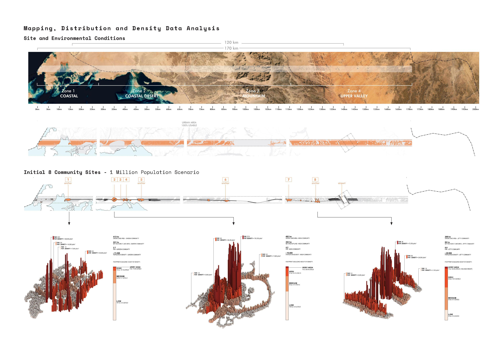
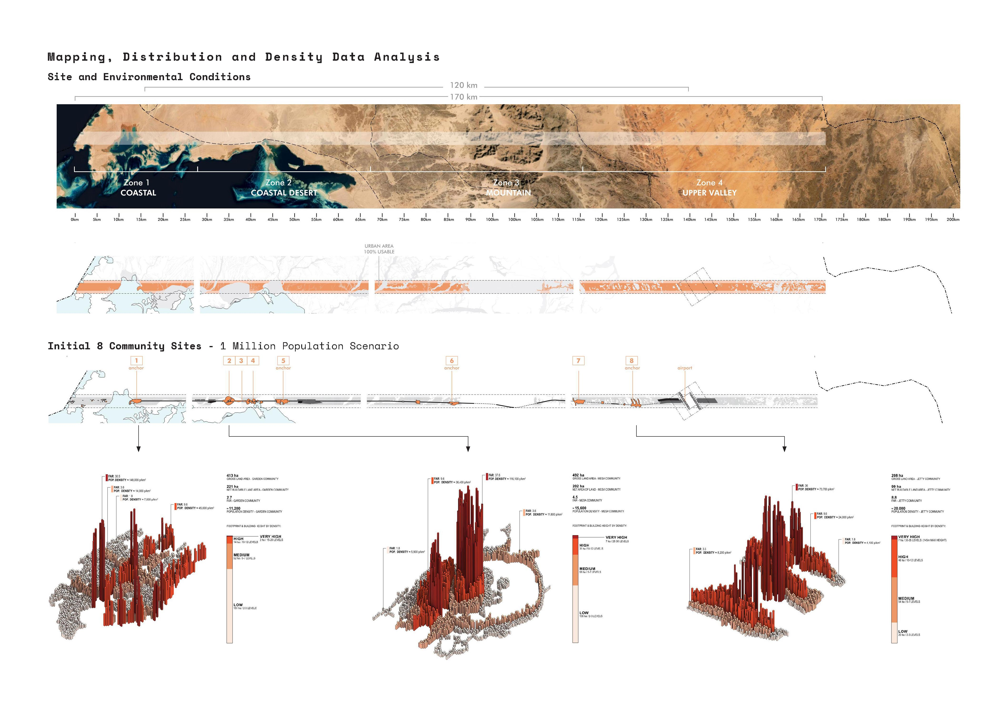
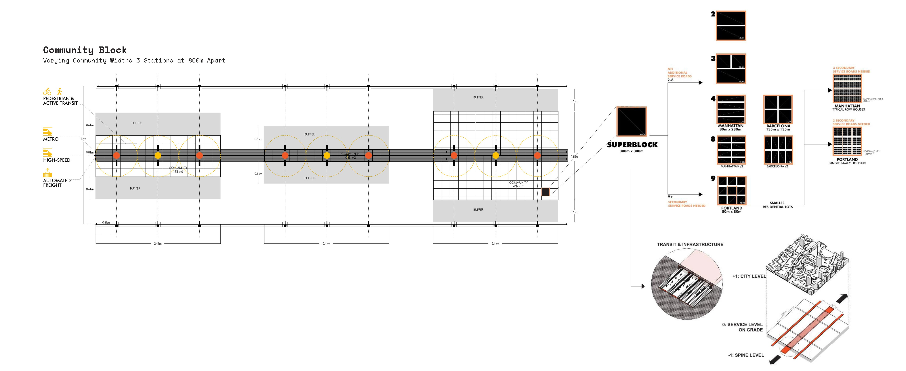
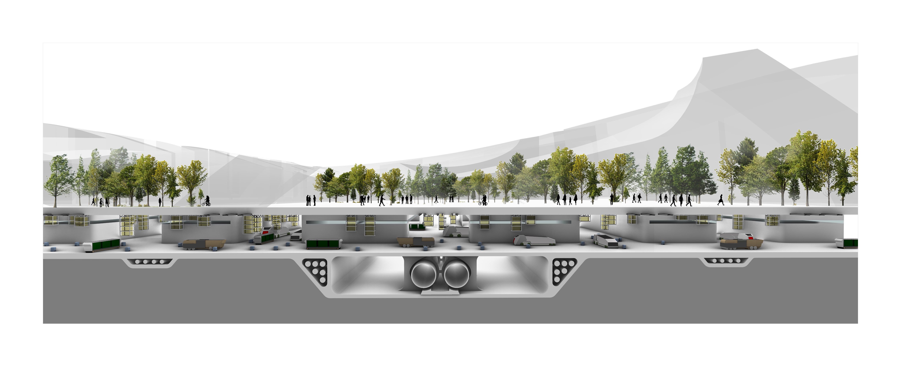
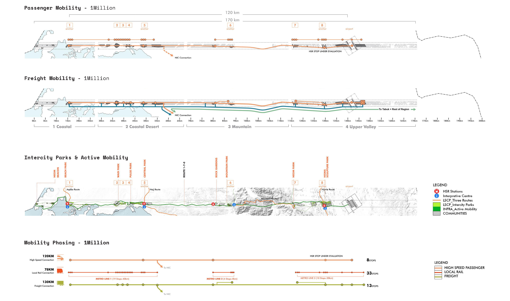
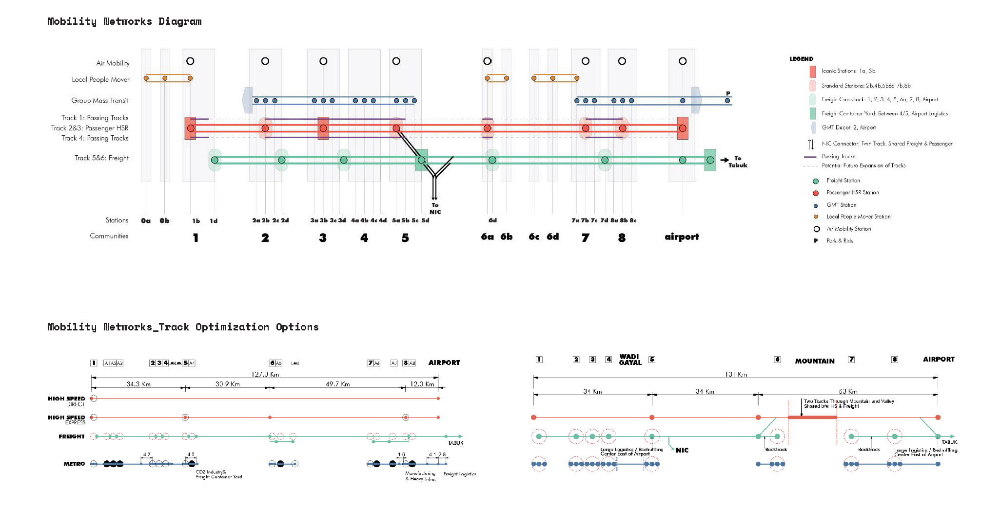
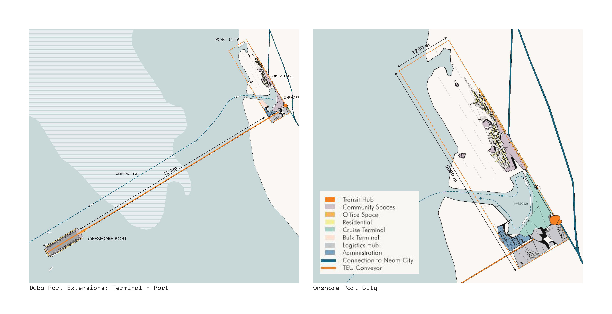
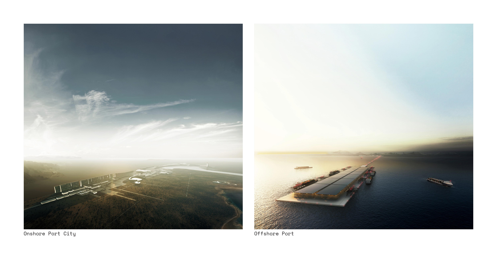

· the line at NEOM ·
Senior Team: Eui Sung Yi (Principal), Tarek Qaddumi (Regional Director), Aleksander Tamm-Seitz (Project Manager)
NEOM is the quintessence of urban life in the 21st century. This vision is captured in the name of the region: NEOM combines the Greek neo, meaning new, with the first letter of Mostaqbal, the Arabic word for future. NEOM establishes a new regional entity at the bridge of Africa and Asia, where progressive communities, latest technology, and stringent environmental policies address how we will live, work, learn, and connect in ways that are experimental, sustainable and exemplary for our future.
The NEOM regional plan is the framework for a new global hub where people, planning, policy, and technology work together to foster innovation and address critical questions of environmental stewardship, social equity, and sustainable economic growth facing Saudi Arabia and the world.
As the prerequisite to achieve NEOM’s goals, the regional plan poses the model for an intrinsic relationship between nature and urban development, outlining the maximal outcome for each on their own terms. This strategy approach keeps the entire development footprint to a minimum of 4% while leaving 96% of the region intact. It preserves the majority of the region as pristine, undeveloped land to be nurtured as an ecological enclave and potential World Heritage park. The concentrated urban area is developed to a critical density inspiring creativity, social connectivity, and a high quality of life. It consists of a diversity of inclusive, walkable, sustainable communities supported by human-oriented technological advancement.
As a region, NEOM spans multiple ecological regions and geographic conditions, encompassing environmentally significant habitats and cultural heritage sites within a largely undeveloped landscape. The regional plan responds to this context by concentrating urban development within a 170-kilometer-long, 3-kilometer-wide line (referred to henceforth as “the Line”), which links the coast of the Red Sea to the upper desert of NEOM. The Line connects multiple communities of 80,000 inhabitants along a shared infrastructure and transit spine (referred to henceforth as “the Spine”). This strategy accommodates the Line’s total population of 1 million in walkable, active urban centers with a density comparable to the world’s most livable cities. Centered around local and regional transit hubs, each community is designed to reach transportation within a 5-minute walk from anywhere within the community.
The following points define our vision for NEOM. They serve as governing markers to manifest NEOM as a new model for the accordance of nature and urban development.
 


Superblock & Mobility Studies
   
Neom Industrial Port
 